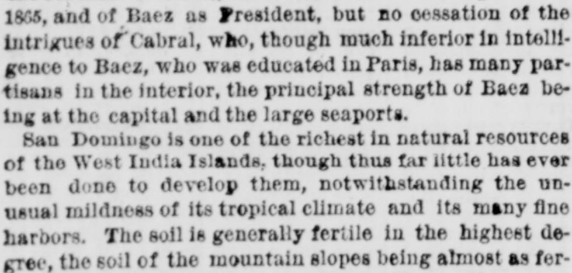
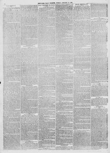

San Domingo is one of the richest in natural resources of the West India IslandsSan Domingo es uno de los más ricos en recursos naturales de
New-York Tribune. New York [N.Y.], January 13, 1871. Page 2. View the originalVer el original


See the full pageVer la página completaThe New-York Tribune highlighted the rich agricultural potential and natural resources of Santo Domingo, including its fertile soil, fine harbors, and river networks. The article noted that sugar cane, coffee, and especially tobacco thrived, with large amounts of Dominican tobacco exported monthly via Puerto Plata to European markets like Bremen and Hamburg.El New-York Tribune encomió el rico potencial agrícola y los recursos naturales de Santo Domingo, resaltando la feracidad de su suelo, sus excelentes puertos y sus cuencas fluviales. El artículo apuntó que la caña de azúcar, el café y muy especialmente el tabaco prosperaban con lozanía, exportándose mensualmente copiosos cargamentos de tabaco dominicano por Puerto Plata hacia plazas europeas como Bremen y Hamburgo.
FULL TEXT:TEXTO COMPLETO:
Misrule and oppressive taxation brought about the revolution of 1863, the restoration of the republic in 1865, and of Baez as President, but no cessation of the intrigues of Cabral, who, though much inferior in intelligence to Baez, who was educated in Paris, has many partisans in the interior, the principal strength of Baez being at the capital and the large seaports.El desgobierno y la tributación opresiva trajeron la revolución de 1863, la restauración de la república en 1865, y de Báez como Presidente, pero no el cese de las intrigas de Cabral, quien, aunque muy inferior en inteligencia a Báez, que fue educado en París, tiene muchos partidarios en el interior, estando la fuerza principal de Báez en la capital y los grandes puertos marítimos.
San Domingo is one of the richest in natural resources of the West India Islands, though thus far little has ever been done to develop them, notwithstanding the unusual mildness of its tropical climate and its many fine harbors. The soil is generally fertile in the highest degree, the soil of the mountain slopes being almost as fertile as that of the plains and valleys. The south part of the island is intersected and watered by many rivers, which not only increase the natural productiveness of the soil, but afford a means of communication with the interior districts.Santo Domingo es una de las más ricas en recursos naturales de las Islas de las Indias Occidentales, aunque hasta ahora poco se ha hecho para desarrollarlos, no obstante la inusual suavidad de su clima tropical y sus muchos finos puertos. El suelo es generalmente fértil en el más alto grado, siendo el suelo de las laderas de las montañas casi tan fértil como el de las llanuras y los valles. La parte sur de la isla está entrecruzada y regada por muchos ríos, que no solo aumentan la productividad natural del suelo, sino que ofrecen un medio de comunicación con los distritos del interior.